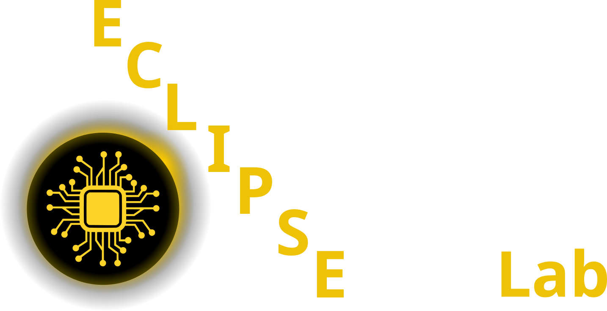

Machine Learning for Characterization and Processing
Unit 2: Physics of data formation
AI 4 Materials / KI-Materialtechnologie
Prof. Dr. Philipp Pelz
FAU Erlangen-Nürnberg



01. From Atoms to Bits
- How do we get from a physical sample to a digital array?
- Understanding the Measurement Chain.
- Signals are not “truth”—they are filtered, discretized, and noisy representations of reality.
02. The Measurement as a Mapping
- A measurement is a function \(M: \mathcal{P} \rightarrow \mathcal{D}\) mapping physical states to data.
- Convolution: The signal is often the true state convolved with the instrument’s Point Spread Function (PSF).
- \(I(\mathbf{r}) = [O * PSF](\mathbf{r}) + \eta\)
- Task: Can ML “deconvolve” the instrument effects?
03. Resolution vs. Pixel Size
- Pixel size is what you choose; resolution is what the physics allows.
- Rayleigh Criterion: The limit of distinguishable features.
- Over-sampling vs. Under-sampling.
- Nyquist-Shannon Theorem: You must sample at least twice the highest frequency.
04. Sampling and Aliasing
- What happens when you sample too coarsely?
- High-frequency physical details “masquerade” as low-frequency artifacts.
- ML Impact: Your model might learn artifacts instead of features.
05. The Stochastics of Data (I)
- Data is a Stochastic Process (Neuer Ch 2).
- Every measurement is one realization of a random variable.
- Laplace Probability: \(P(A) = \frac{\text{favorable outcomes}}{\text{possible outcomes}}\).
- In the lab, we repeat measurements to “see” the distribution.
06. The Stochastics of Data (II)
- Random Variables: Mapping non-mathematical outcomes to numbers.
- Discrete vs. Continuous:
- Discrete: Count of precipitates, number of phases.
- Continuous: Temperature, stress, chemical concentration.
07. Noise as a Physical Prior
- Noise is not just “bad data”.
- Poisson Noise: Shot noise from discrete particles (electrons, photons).
- Gaussian Noise: Thermal noise in electronics (Johnson noise).
- The noise distribution tells us about the detector physics.
08. Statistical Foundations: Variance
- Variance: The spread of your data around the mean.
- \(\sigma^2 = \frac{1}{N} \sum (x_i - \mu)^2\).
- In ML, we want to distinguish “Physical Variance” (information) from “Noise Variance” (nuisance).
09. Covariance and Correlation
- Covariance: How two variables change together.
- \(\text{Cov}(X, Y) = E[(X - \mu_X)(Y - \mu_Y)]\).
- Correlation Coefficient: Normalized covariance \([-1, 1]\).
- Materials Example: Do high cooling rates always correlate with smaller grains?
10. The Covariance Matrix \(\mathbf{\Sigma}\)
- A geometric view of data spread in high-dimensional space.
- The principal axes of the “data cloud” are the eigenvectors of \(\mathbf{\Sigma}\).
- This leads us directly to Dimension Reduction.
11. The Curse of Dimensionality
- Experimental data is high-dimensional:
- 1D Spectrum: 2048 channels.
- 2D Image: \(1024 \times 1024\) pixels \(\approx 10^6\) dimensions.
- Most of this space is Empty.
- Materials data usually lies on a low-dimensional Manifold.
12. Singular Value Decomposition (SVD)
- The “engine” of linear algebra.
- \(\mathbf{X} = \mathbf{U} \mathbf{S} \mathbf{V}^T\)
- \(\mathbf{U}\): Left singular vectors (patterns in rows).
- \(\mathbf{V}^T\): Right singular vectors (patterns in columns/features).
- \(\mathbf{S}\): Singular values (importance of each pattern).
13. Principal Component Analysis (PCA)
- Finding the coordinate system that maximizes captured variance.
- Step 1: Mean centering.
- Step 2: SVD of the centered data.
- Step 3: Projecting onto the top \(k\) components.
14. Interpreting PCA: The “Scree Plot”
- Plotting singular values in descending order.
- The “Elbow”: Where information ends and noise begins.
- How many dimensions do we really need to describe this material?
15. Principal Variations in Materials Science
- PCA components often correspond to physical modes:
- Component 1: Overall intensity (thickness/density).
- Component 2: Primary chemical shift or grain rotation.
- Component 3: Secondary phase appearance.
16. Case Study: Spectral Denoising
- Input: Noisy EDS or EELS map.
- Process: Project onto top 5 PCA components, then reconstruct.
- Result: Random noise is discarded; physical peaks are preserved.
- Danger: Be careful not to discard “rare” but real physical events!
17. Time-Series as Vectors
- A process log of 1000 time-steps is a point in 1000D space.
- Reduced Order Modeling (ROM):
- Representing a complex thermal history with 3 PCA “Scores”.
- Mapping these scores to final hardness using a simple regressor.
18. Eigen-Microstructures
- What does the “average” microstructure look like?
- Using PCA on image patches to find dominant morphologies.
- Limitations: PCA is Linear. It cannot handle rotations or complex non-linear structures efficiently.
19. Physics-ML Integration: Fourier Features
- Some physics is better described in the Frequency Domain.
- FFT: Decomposing a signal into sine waves.
- Microstructure periodicity (e.g., in block copolymers or superlattices) is a clear peak in Fourier space.
20. Recap: Unit 2
- Signals are physical mappings \(\rightarrow\) Understand the PSF.
- Noise has a distribution \(\rightarrow\) Use it as a prior.
- High dimensionality is a mask \(\rightarrow\) Use PCA/SVD to find the structure.
- Next week: Ensuring your data is “ML-Ready” (Data quality and leakage).
21. References & Further Reading
- McClarren (2021): Ch. 4 (PCA and Data Reduction)
- Neuer (2024): Ch. 2 (Mathematical description of data)
- Bishop (2006): Ch. 12 (Continuous Latent Variables)
- Sandfeld (2024): Ch. 5 (Statistics) and Ch. 8 (Linear Algebra)

© Philipp Pelz - ML for Characterization and Processing